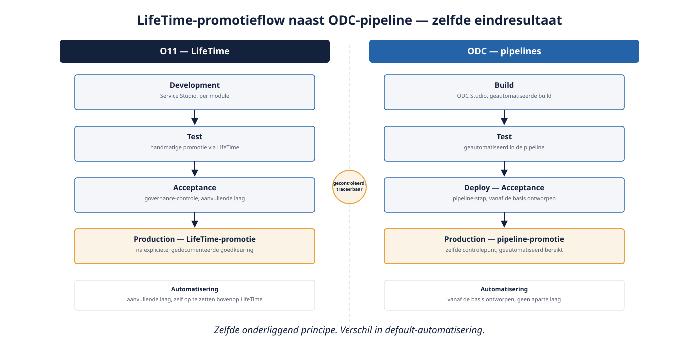

Dagdeel A — Stages en pipelines
⏱ 5 min19.1 Terug naar deel 2, nu op landschapsschaal
Deel 2 introduceerde LifeTime en de ODC Portal als beheerlagen. Op landschapsschaal, met vijftien modules die onafhankelijk van elkaar moeten kunnen deployen zonder elkaar te breken, wordt lifecycle-beheer een vak op zich.
19.2 O11: LifeTime als centrale regisseur
In O11 promoveer je een module expliciet van Development naar Test naar Acceptance naar Production via LifeTime, met per stap een handmatige of geautomatiseerde goedkeuring. Voor een landschap van vijftien modules betekent dit dat LifeTime het centrale overzicht biedt van welke versie van welke module waar draait — essentieel om te voorkomen dat WGP 2.0 in productie tegen een verouderde versie van MeridiaanMutatiesCore praat terwijl Test al de nieuwe versie heeft.
19.3 ODC: pipelines als cloud-native aanpak
ODC benadert hetzelfde probleem met pipelines: geconfigureerde, vaak geautomatiseerde reeksen van build-test-deploy-stappen die dieper geïntegreerd zijn in de ODC Portal dan LifeTime's promotiemodel. 1-Click Publish (deel 2) is de eenvoudigste vorm hiervan; voor een landschap op schaal configureer je een volledige pipeline met geautomatiseerde tests en expliciete goedkeurmomenten vóór productie.
Het onderliggende principe — gecontroleerde, traceerbare promotie tussen omgevingen — is identiek. Het verschil zit in de mate van automatisering die default beschikbaar is: ODC's pipelines zijn vanaf de basis ontworpen voor geautomatiseerde CI/CD-achtige flows; O11's LifeTime is primair een promotie- en governance-tool, waar geautomatiseerde pipelines meestal een aanvullende, zelf op te zetten laag zijn (bijvoorbeeld met externe CI/CD-tooling die op LifeTime's API's aansluit).

Uit Werkboek deel 19, Opdracht 19.1 — LifeTime of pipeline?
1a. Een module moet van Development naar Test gepromoveerd worden met een expliciete goedkeuring van de teamlead.
b. Een geautomatiseerde reeks van build-test-deploy-stappen, standaard beschikbaar zonder aparte configuratie.
c. Een centraal overzicht van welke versie van welke module in welke omgeving draait.Toon antwoord
a. Beide platformen ondersteunen dit — het principe van gecontroleerde promotie met goedkeuring is gedeeld.
b. ODC — pipelines zijn vanaf de basis ontworpen voor deze automatisering; in O11 is dit een aanvullende, zelf op te zetten laag.
c. Beide — LifeTime en de ODC Portal bieden allebei dit overzicht, met een verschil in integratiediepte.